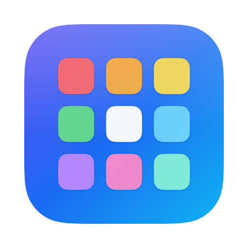

Classic Launcher
The classic app grid, back on your Mac.
Get help
Questions, bugs or ideas: write anytime, and you’ll get an answer from the developer. Need Help? Contact Us… in the app’s … menu starts a message with details that help.
Email SupportQuestions
How do I open it?
Click Classic Launcher in the Dock. To keep it there, right-click its icon in the Dock and choose Options › Keep in Dock. You can also press ⌃⌥⌘L, or point at a screen corner once you’ve set a hot corner. Both are in the … menu beside the search field.
How do I organize my apps?
Drag an app to move it; the others make room. Drop it on another app to make a folder. To rename a folder, open it and click its name, or right-click it and choose Rename. Drag an app to the side of the screen to move it to another page. Hold ⌥ to make the apps jiggle.
How do I find an app?
Just start typing. Press Return to open the first match, or use the arrow keys.
How do I uninstall an app?
Right-click it and choose Uninstall, click its ✕ while the apps jiggle, or drag it to the trash that appears in the corner. The first time, Classic Launcher asks you to allow your Applications folder: choose it and click Allow. The app goes to the Trash, so you can put it back until you empty the Trash. Apps that macOS protects, like Apple’s own, can’t be uninstalled. Apps installed by the App Store are shown in Finder so you can delete them there.
Where do new apps go?
At the end of the last page, with a blue dot until you open them.
Can I start over?
Yes: … › Start over › Alphabetically puts Apple’s apps first and the rest in alphabetical order.
How does the free trial work?
Everything works free for 7 days. After that, one purchase of $6.99 unlocks Classic Launcher for good. It’s not a subscription, so nothing renews.
I already bought it. How do I get it back?
Click Restore Purchases on the purchase screen, or in the … menu. Use the same Apple Account you bought it with.
How do I get a refund?
Refunds are handled by Apple at reportaproblem.apple.com.
What does it need?
macOS 26 or later.